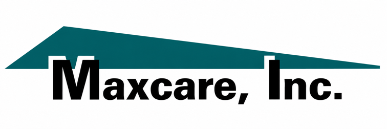
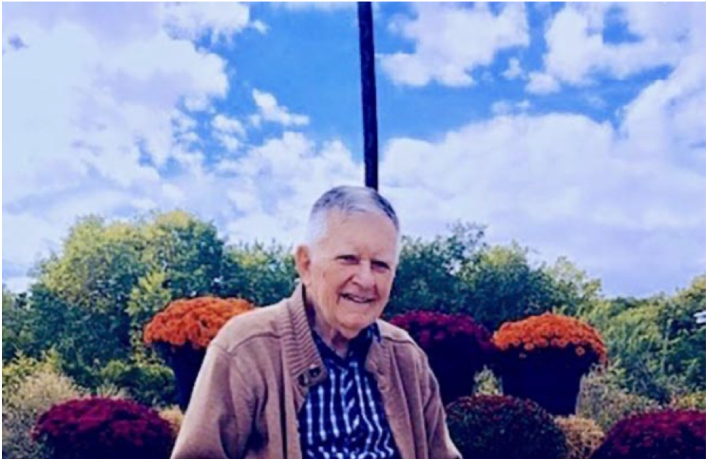
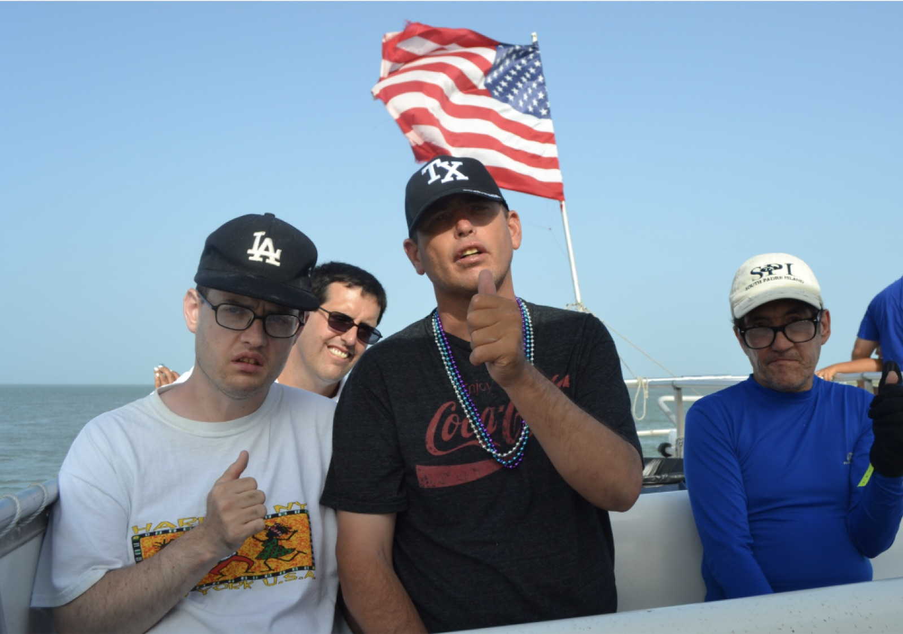
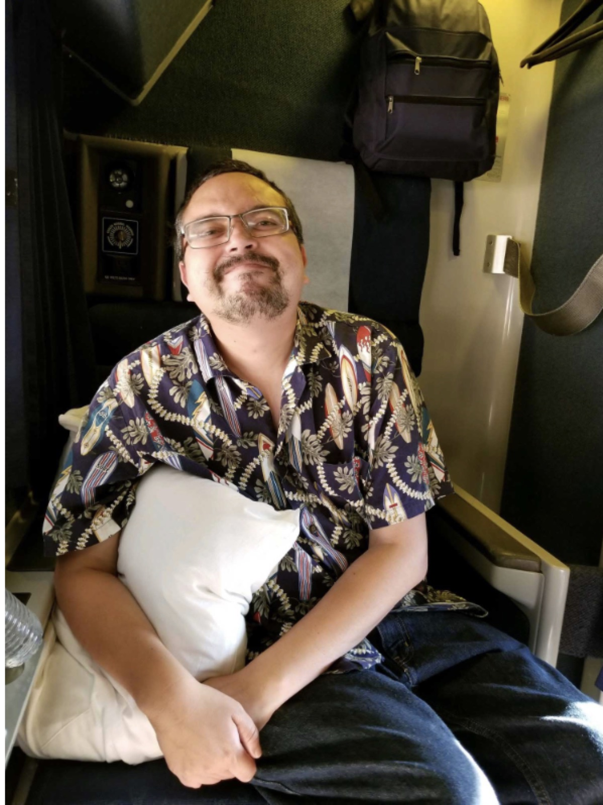
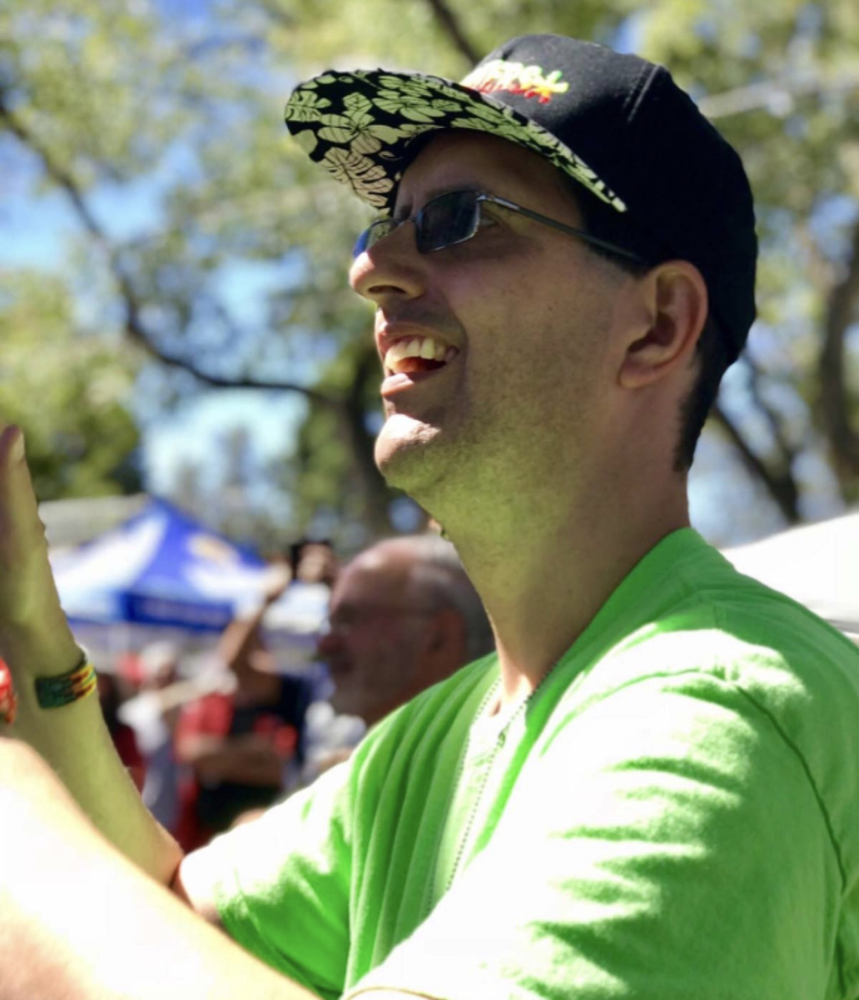

Two services, one goal: helping New Mexicans with intellectual and developmental disabilities live full, self-directed lives — at home and out in the community.

Staffed, welcoming group homes where residents live with round-the-clock support tailored to their needs, routines, and goals.
Learn more →
Day and community programs that build skills, independence, and real friendships out in the Albuquerque community.
Learn more →Our Supported Living homes are real houses in real Albuquerque neighborhoods. Residents live with the daily support, privacy, and routine that make a house a home — with care shaped around each person's needs and choices.

Eight houses on ordinary streets across the Albuquerque area, each with its own personality, routines, and community.
Trained direct support professionals are there around the clock, helping with daily living while honoring independence.
Residents shape their own days — meals, activities, outings, and goals are self-selected, not one-size-fits-all.
We're happy to talk through whether this service is the right fit for you or your family member.
Contact us →Customized Community Supports (CCS) helps people build skills, friendships, and meaningful roles out in the community — on their own terms. From classes and volunteering to outings and everyday errands, CCS is about a life that's truly connected.

Activities happen where life happens — parks, libraries, shops, events, and volunteer sites across Albuquerque.
Everyday skills — communication, mobility, money, self-advocacy — practiced in real settings with real purpose.
Every plan is customized: interests, goals, and pace are set by the person we support, not a program schedule.
We're happy to talk through whether this service is the right fit for you or your family member.
Contact us →